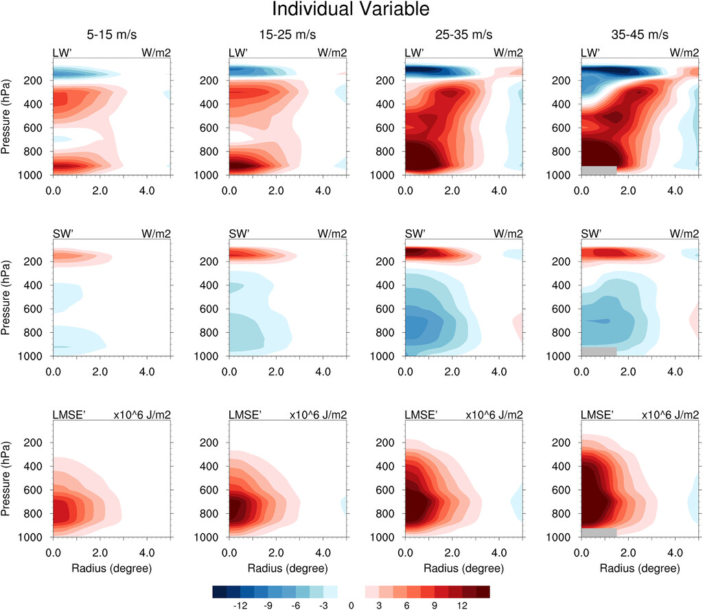
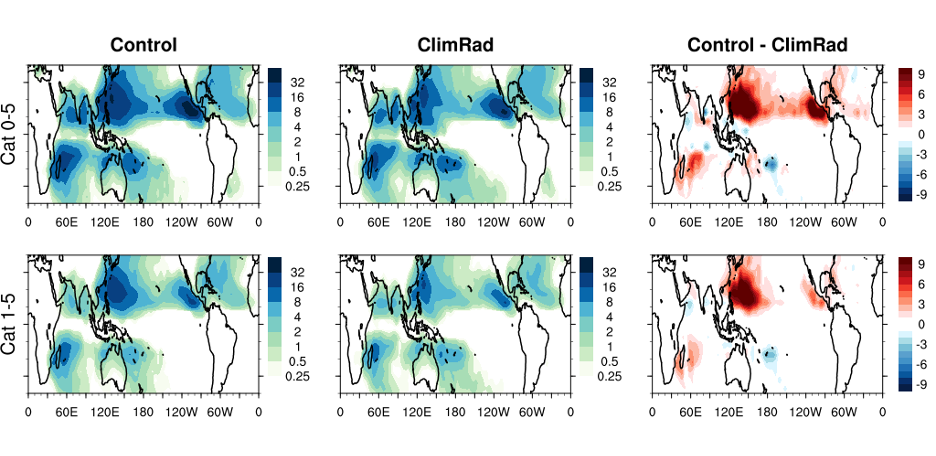
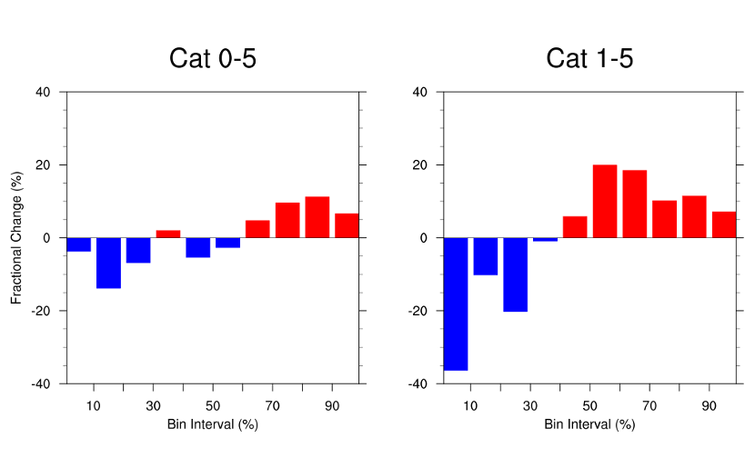
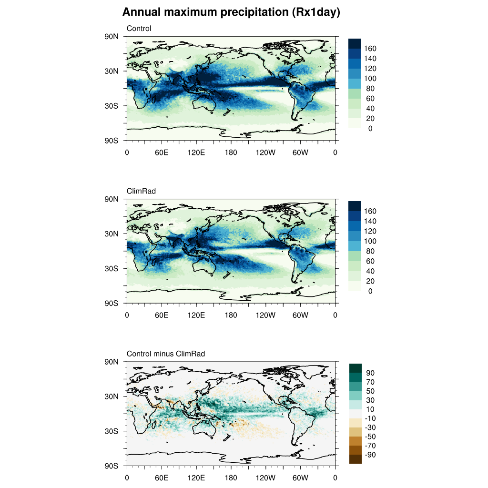
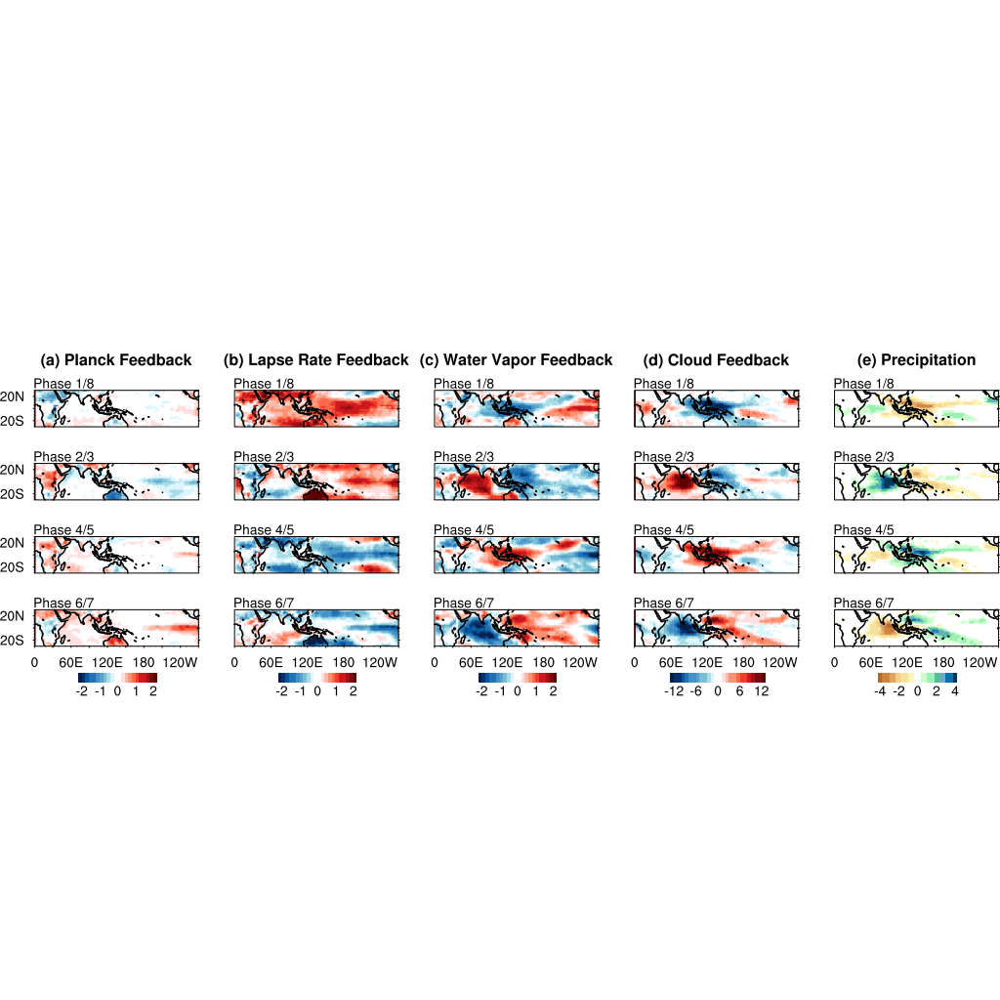

Radiation-Convection Interactions in Tropical Cyclones
Overview: To examine the role of radiation-convection interactions in the development of Tropical Cyclones (TCs), mechanism denial experiments are conducted using a general circulation model.

Track density in Control run (left), ClimRad run (middle), and difference (right).
This figure shows vertical cross sections of azimuthally averaged and density-weighted individual variables for longwave radiation, shortwave radiation, and moist static energy during different TC intensities.

TC frequency is reduced without radiative interactions. The figure below shows the track density in the Control run (with radiative interactions), the ClimRad run (without radiative interactions), and their difference.

Comparison of TC duration (Control minus ClimRad).
Reduced degree of aggregation and extreme precipitation without radiative interactions. This figure compares annual maximum precipitation between the Control and ClimRad runs.

Radiative Feedbacks Associated with the MJO
This study uses radiative kernels to diagnose radiative feedbacks associated with the MJO. As an important driver of tropical intraseasonal variability, the MJO can be viewed as a kind of convective aggregation which involves interactions between clouds, circulation, radiation, and water vapor.
